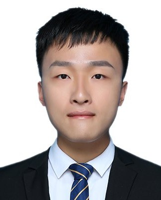
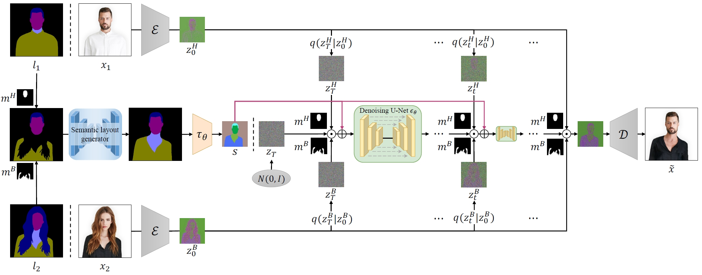
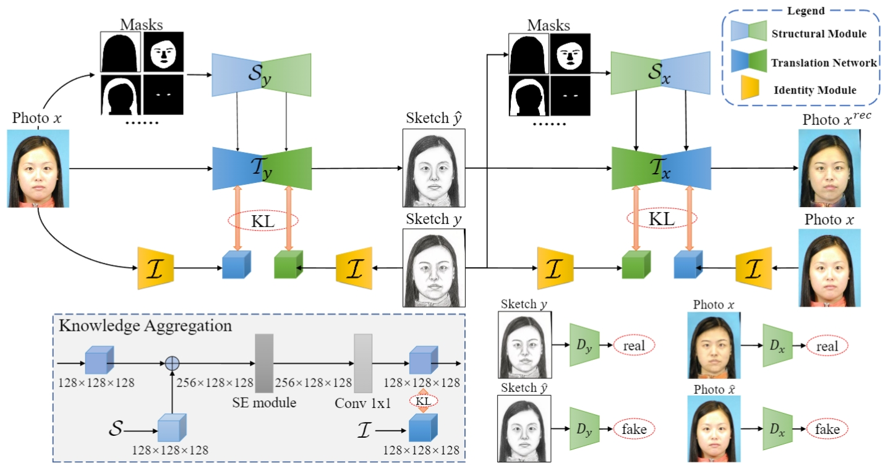
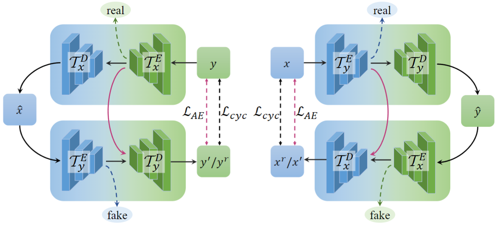

Qinghe Wang(王清和)
|
 |
I am a first year PhD student at the IIAU-Lab in Dalian University of Technology, under the supervision of Prof. Huchuan Lu (卢湖川) and Xu Jia (贾旭). I obtained my Master's degree from Tianjin University supervised by Prof. Pengfei Zhu (朱鹏飞) and Bing Cao (曹兵). I was an intern at ByteDance Intelligent Creation Lab, Beijing in 2022. I obtained my Bachelor's degree from Dalian Maritime University. My main research interests includes Image/Video generation and editing with Diffusion models/GAN. E-mail: aitwqh@163.com [GitHub] [Google Scholar] |
News!
[2024/4] 🔥 Release paper "CharacterFactory: Sampling Consistent Characters with GANs for Diffusion Models".
[2024/3] 🔥 Release all the codes of "StableIdentity". Welcome to use!
[2024/1] 🔥 Release paper "StableIdentity: Inserting Anybody into Anywhere at First Sight".
[2023/6] Outstanding Master's Thesis of Tianjin University.
[2023/1] "Multi-view knowledge ensemble with frequency consistency for cross-domain face translation" has been accepted by IEEE Transactions on Neural Networks and Learning Systems (TNNLS).
[2023/8] Release paper "HS-Diffusion: Semantic-Mixing Diffusion for Head Swapping".
[2022/8] "基于自判别循环生成对抗网络的人脸图像翻译" has been published by 《中国科学：信息科学》.
Selected Publications
 |
[Arxiv 2024] |
 |
[Arxiv 2024] |
|
 |
[Arxiv 2023] |
{kind=link}
|
 |
[TNNLS CAS-JCR Q1 Top] |
{kind=link}
|
 |
[中国科学：信息科学 CCF A] |
{kind=link}
Service
I serves as a reviewer of: TPAMI, ICLR, ACM MM, ICME, MIR, etc.
Awards
Outstanding Master's Thesis of Tianjin University 2023
Gold Award of Huawei Ascend AI Innovation Competition 2023
Third Prize of “Huawei Cup” - the 18th China Postgraduate Mathematical Contest in Modeling 2020
Outstanding Graduates from Liaoning Province 2020
First prize (1st place) of the software competition in Rockwell Automation Dalian Software R&D Center 2019
Third Prize of Chinese College Students Computer Design Contest 2019
Honorable Mention of The Mathematical Contest in Modeling (MCM) 2019
Provincial second prize of “NXP” Cup National University Students Intelligent Car Race Competition 2019
Third Prize of iCAN International Contest of innovation 2018
Meritorious Winner of The Mathematical Contest in Modeling (MCM) 2018
Provincial second prize of “TI” Cup Liaoning Provincial Undergraduate Electronic Design Contest 2018
Provincial second prize of “NXP” Cup National University Students Intelligent Car Race Competition 2018
Provincial second prize of National Undergraduate Electronics Design Contest 2017